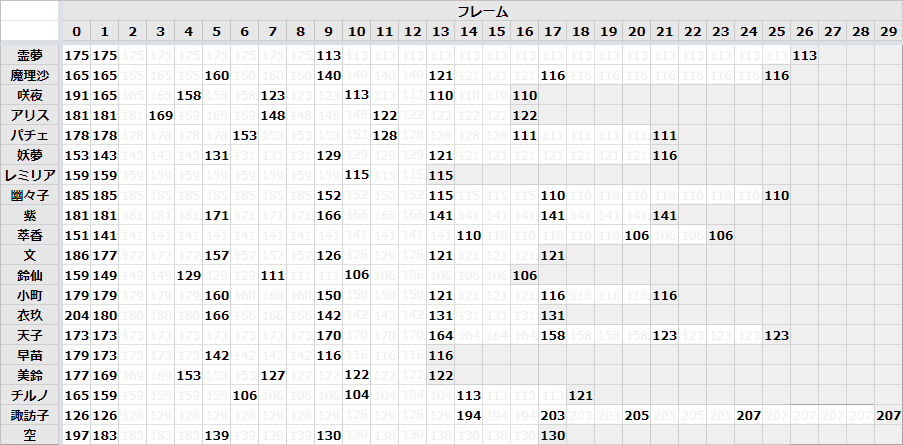

立ガ → 屈ガ移行¶
移行フレームのキャラ差¶
F式に関連する観察¶
キャラ |
平均身長(1-5F) |
(順位) |
平均身長(1-10F) |
(順位) |
アリスF式猶予 |
|---|---|---|---|---|---|
霊夢 |
175.0 |
12 |
163.7 |
13 |
6 |
魔理沙 |
165.0 |
7 |
158.6 |
10 |
N/A |
咲夜 |
168.8 |
9 |
149.3 |
6 |
N/A |
アリス |
176.2 |
13 |
164.6 |
14 |
4 |
パチェ |
178.0 |
14 |
166.6 |
15 |
3 |
妖夢 |
145.0 |
3 |
137.0 |
4 |
N/A |
レミリア |
159.0 |
5 |
155.0 |
9 |
N/A |
幽々子 |
185.0 |
19 |
179.0 |
20 |
6 |
紫 |
181.0 |
17 |
174.6 |
19 |
6 |
萃香 |
143.0 |
2 |
141.9 |
5 |
N/A |
文 |
178.8 |
15 |
161.3 |
12 |
2 |
鈴仙 |
147.0 |
4 |
130.2 |
2 |
N/A |
小町 |
179.0 |
16 |
166.8 |
16 |
2 |
衣玖 |
184.8 |
18 |
170.2 |
17 |
2 |
天子 |
173.0 |
10 |
172.5 |
18 |
10 |
早苗 |
174.2 |
11 |
151.9 |
8 |
2 |
美鈴 |
167.4 |
8 |
149.6 |
7 |
1 |
チルノ |
160.2 |
6 |
135.3 |
3 |
N/A |
空 |
185.8 |
20 |
158.6 |
10 |
2 |
(諏訪子) |
126.0 |
1 |
126.0 |
1 |
N/A |
注釈
諏訪子は屈ガで身長が高くなるので除外
F式猶予 は、アリスの上りJAが下りJA正ガ後に最速18Fで発生し、身長168dot以上なら当たると仮定した場合の推定値